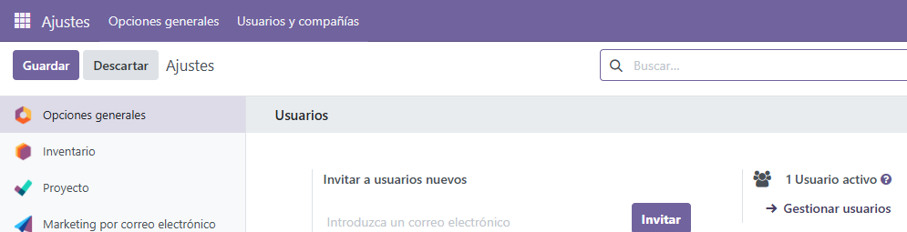
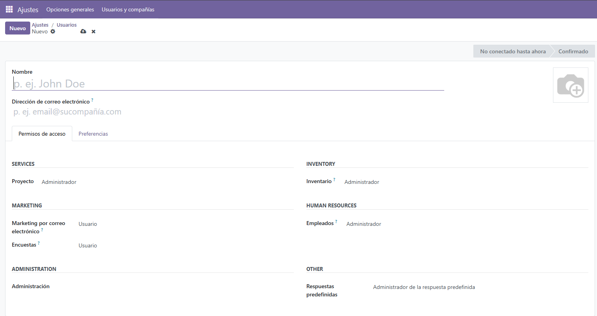
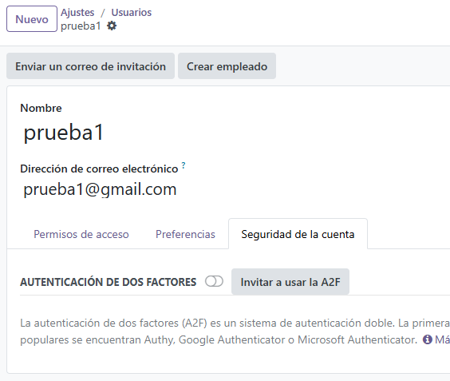

Acceso Seguro a la Información en Odoo
¿Por qué es importante el acceso seguro?
El acceso seguro en un SGE como Odoo garantiza que solo las personas autorizadas puedan ver o modificar la información de la empresa. Esto protege los datos y evita errores o accesos no deseados.
Información sobre los roles y privilegios
Para ver y modificar los roles y privilegios de los usuarios debemos acceder a los ajustes y hacer clic en gestionar usuarios.
Una vez dentro podemos ver y modificar los usuarios existentes, que en este caso solo había uno que es el mio, y también podemos crear usuarios nuevos. Al darle a nuevo nos aparecería para poner el nombre del usuario, su correo y una imagen de perfil digamos. Como se ve en la parte de permisos de acceso podemos asignarle permisos de Administrador o Usuario en cada apartado, en la parte de servicios puede ser administrador pero en inventario de usuario y así con todos, depende de como se quiera.
También para logearnos podemos añadir de medida de seguridad autenticación en dos factores para que al poner nuestro correo/usuario y contraseña nos pida introducir un código que nos llegaría al correo o alguna aplicación de autenticación como puede ser las que se mencionan en la imagen, Authy, Google Authenticator o Microsoft Authenticator.